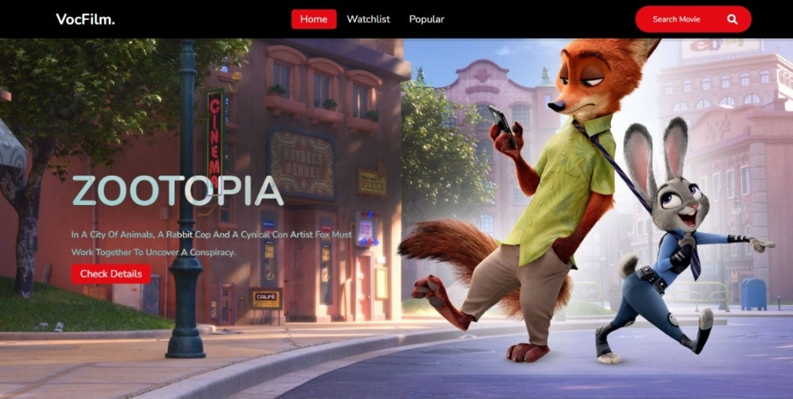
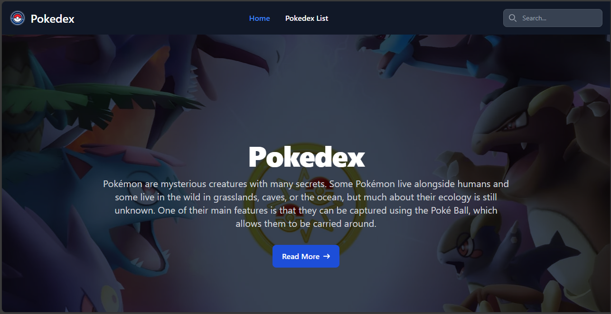
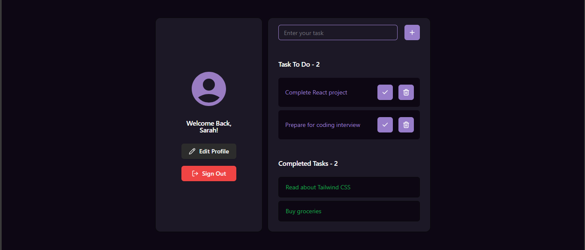

Projects

Proyek Website Film
Mengembangkan Website Film dengan menggunakan HTML CSS Tailwind

Pokedex
Sebuah website yang berisi hero pokemon hasil dari fetching data api website pokemon. proyek ini emnggunakan html css tailwind flowbite

VOCA Task Management App
Membangun aplikasi manajemen tugas berbasis React dengan Shadcn UI, mencakup halaman login, pengelolaan tugas, dan profil pengguna, sesuai dengan desain Figma.
Contact Me